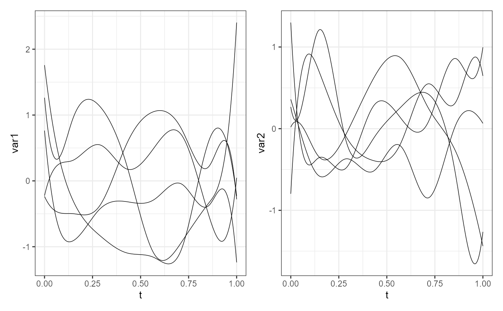

This is the constructor function for objects of the mfd class.
It is a wrapper to fda::fd,
but it forces the coef argument to be
a three-dimensional array of coefficients even if
the functional data is univariate.
Moreover, it allows to include the original raw data from which
you get the smooth functional data.
mfd(coef, basisobj, fdnames = NULL, raw = NULL, id_var = NULL)
| coef | A three-dimensional array of coefficients: * the first dimension corresponds to basis functions. * the second dimension corresponds to the number of multivariate functional observations. * the third dimension corresponds to variables. |
|---|---|
| basisobj | A functional basis object defining the basis,
as provided to |
| fdnames | A list of length 3, each member being a string vector containing labels for the levels of the corresponding dimension of the discrete data. The first dimension is for a single character indicating the argument values, i.e. the variable on the functional domain. The second is for replications, i.e. it denotes the functional observations. The third is for functional variables' names. |
| raw | A data frame containing the original discrete data. Default is NULL, however, if provided, it must contain: a column (indicated by the a column named as as many columns as the functional variables,
named as in |
| id_var | A single character value indicating the column
in the |
A multivariate functional data object
(i.e., having class mfd),
which is a list with components named
coefs, basis, and fdnames,
as for class fd,
with possibly in addition the components raw and id_var.
To check that an object is of this class, use function is.mfd.
Ramsay, James O., and Silverman, Bernard W. (2006), Functional Data Analysis, 2nd ed., Springer, New York.
Ramsay, James O., and Silverman, Bernard W. (2002), Applied Functional Data Analysis, Springer, New York.
library(funcharts) set.seed(0) nobs <- 5 nbasis <- 4 nvar <- 2 coef <- array(rnorm(nobs * nbasis * nvar), dim = c(nbasis, nobs, nvar)) bs <- create.bspline.basis(rangeval = c(0, 1), nbasis = nbasis) mfdobj <- mfd(coef = coef, basisobj = bs) plot_mfd(mfdobj)